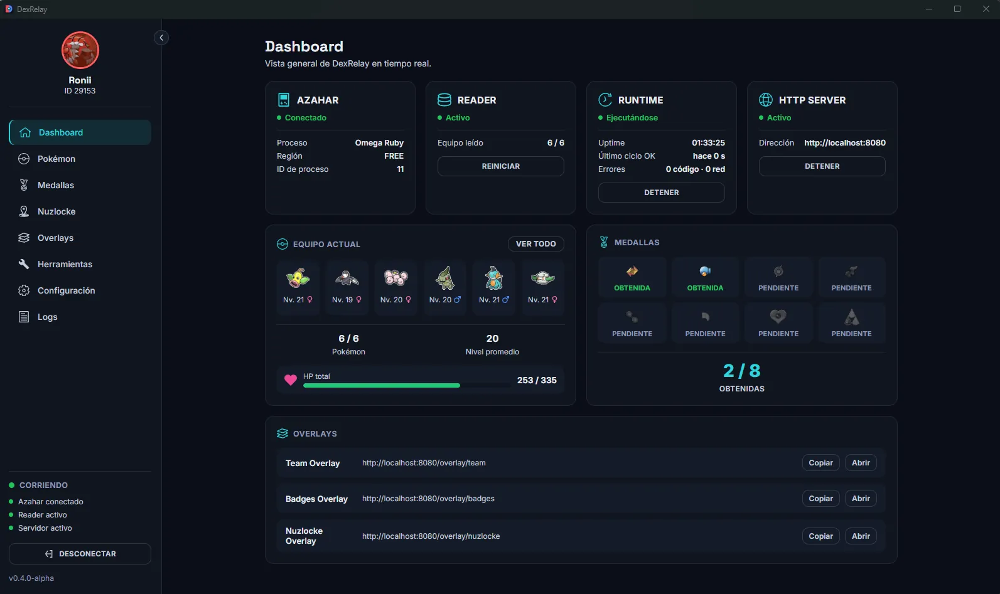
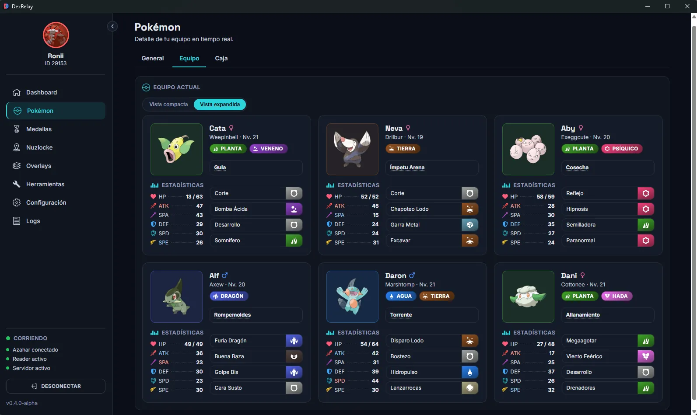
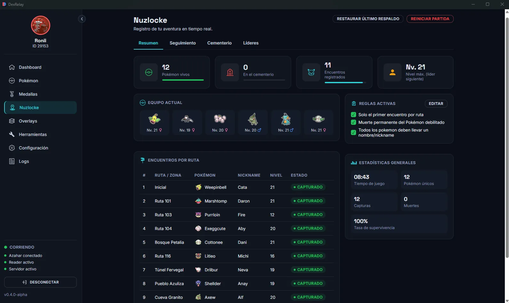
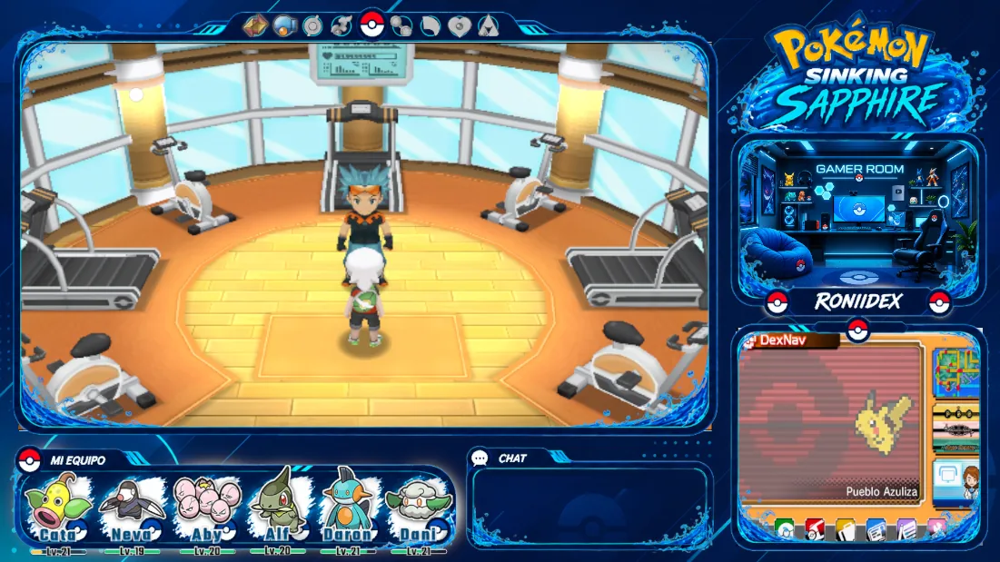

Equipo
en tiempo real
Consulta tu equipo, niveles y estado mientras juegas.
Ver detalles →Equipo en tiempo real · Nuzlocke · Pokédex
Medallas · OBS

DexRelay conecta Pokémon Omega Ruby y Alpha Sapphire ejecutándose en Azahar con una interfaz que mantiene tu partida, tu progreso y tus overlays siempre al alcance.
Consulta tu equipo, niveles y estado mientras juegas.
Ver detalles →Registra encuentros, pérdidas y progreso de tu Nuzlocke.
Ver detalles →Consulta información de Pokémon, tipos, estadísticas, habilidades y evoluciones.
Ver detalles →Sigue tu progreso de gimnasios y medallas obtenidas.
Ver detalles →Lleva la información de tu partida directamente a tu stream.
Ver detalles →Descubre las principales secciones de DexRelay.
Toda la información de tu partida en un solo lugar.
Consulta tu equipo en tiempo real.

Registra encuentros, pérdidas y progreso.

Conecta los overlays de DexRelay a OBS y muestra información de tu partida directamente sobre el gameplay.

DexRelay debe estar abierto y con el servidor activo para que los overlays se actualicen.
http://localhost:8080/overlay/teamhttp://localhost:8080/overlay/badgeshttp://localhost:8080/overlay/nuzlockeDexRelay incluye soporte opcional para los hackroms Rising Ruby y Sinking Sapphire.
En solo 3 pasos tendrás DexRelay funcionando.
Descarga DexRelay para Windows.
Abre Azahar con tu partida de Pokémon ORAS.
Inicia DexRelay y deja que los datos aparezcan en tiempo real.
Diseñado para funcionar sin complicaciones.
DexRelay lee la memoria del juego en vivo. No modifica tu ROM ni tu partida; la única excepción es la página opcional Herramientas, que agrega un Caramelo Raro a la bolsa.
Los datos y los overlays se sirven desde tu propio equipo (localhost), sin depender de un servicio externo.
Sigue el desarrollo, descarga cada versión y reporta errores en Issues. DexRelay está en fase alpha y mejora con tus comentarios.
Lleva tu partida de Pokémon ORAS un paso más allá.